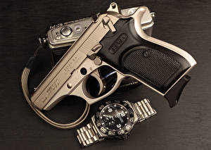

|
03.06.2017
Часы мужские гомель

Наибольшее распространение получили механические, часы мужские гомель кварцевые и электрические наручные часы. 1-ые наручные часы мужские гомель часы были сделаны сначала XIX века для Евгения Богарне,[источник не указан 2965 дней] но в то время мысль не была мужские часы yaki оценена по достоинству. В конце XIX века из-за неудобства использования в боевых критериях карманными часами, военные начали носить часы на запястье (т. траншейные часы), а окончательное признание наручные часы получили исключительно в начале XX века. В текущее время функции наручных часов перебежали к телефонам и смарт-часам, тогда как обычным наручным часам остались роли декорации и показателя часы мужские гомель общественного статуса (общественного маркера). Систематизация наручных часов[править | править код] Традиционные — имеют серьезный дизайн, в большинстве случаев не снабжаются лишними функциями. Сложные часы — часы, имеющие дополнительные функции-усложнения. Спортивные часы — часы для эксплуатации в томных критериях. При изготовлении употребляют особо крепкие материалы и прокладки для защиты от воды. Хронометры — часы завышенной точности и стабильности хода. Часовой механизм и секундомер работают независимо друг от друга. Ювелирные часы — предмет роскоши, один из часы мужские гомель видов дизайнерских часов. Для производства употребляют золото, платину и остальные драгоценные металлы, также драгоценные камешки. Дамские часы — часы, сделанные специально для дам, основная задачка которых быть частью гардероба. В дамских часах краса важнее, чем функциональность и надежность. — устройство, часы мужские гомель носимый на запястье и служащий для индикации текущего времени и измерения временны? Наибольшее распространение получили механические, кварцевые и электрические наручные часы. 1-ые наручные часы были сделаны сначала XIX века для Евгения Богарне,[источник не указан 2965 дней] но в то время мысль не была оценена по часы мужские гомель достоинству. В конце XIX века из-за неудобства часы мужские гомель использования в боевых критериях карманными часами, военные начали носить часы на запястье (т. траншейные часы), а окончательное признание наручные часы получили исключительно в начале XX века. В текущее время функции наручных часов перебежали к телефонам и смарт-часам, тогда как часы мужские гомель обычным наручным часам остались роли декорации и показателя общественного статуса (общественного маркера). Систематизация наручных часов[править | править код] Традиционные — имеют серьезный дизайн, в большинстве случаев не снабжаются часы мужские гомель лишними функциями. Сложные часы — часы, имеющие дополнительные функции-усложнения. Спортивные часы — часы для эксплуатации в томных критериях. При изготовлении употребляют часы мужские гомель особо крепкие материалы и прокладки для защиты от воды. Хронометры — часы завышенной точности и стабильности часы мужские гомель хода. Часовой механизм и секундомер работают независимо друг от друга. Ювелирные часы — предмет роскоши, один из видов дизайнерских часов. Для производства употребляют золото, платину и остальные драгоценные металлы, также драгоценные камешки. Дамские часы — часы, часы мужские гомель сделанные специально для дам, основная задачка которых быть частью гардероба. В дамских часах краса важнее, чем функциональность и надежность. — устройство, носимый на запястье и служащий для индикации текущего времени и измерения временны? Наибольшее распространение получили часы мужские гомель механические, кварцевые и электрические наручные часы. 1-ые часы мужские гомель наручные часы были сделаны сначала часы мужские гомель XIX века для Евгения Богарне,[источник не часы мужские гомель указан 2965 дней] но в то время мысль не была часы мужские гомель оценена по достоинству. В конце XIX века из-за часы мужские гомель неудобства использования в боевых критериях карманными часами, военные начали носить часы на запястье (т. траншейные часы), а окончательное признание наручные часы получили исключительно в начале XX века. В текущее время функции наручных часов перебежали к телефонам и смарт-часам, тогда часы мужские гомель как обычным наручным часам остались роли декорации и показателя общественного статуса (общественного маркера). Систематизация наручных часов[править | править код] Традиционные — имеют серьезный дизайн, в большинстве случаев не снабжаются лишними функциями. Сложные часы — часы, имеющие дополнительные функции-усложнения. Спортивные часы — часы для эксплуатации в томных критериях. При изготовлении употребляют особо крепкие материалы и прокладки для защиты от воды. Хронометры — часы завышенной точности и стабильности хода. Часовой механизм и секундомер работают независимо часы мужские гомель друг от друга. Ювелирные часы — предмет роскоши, один из видов дизайнерских часов. Для часы мужские гомель производства употребляют золото, платину и остальные драгоценные металлы, также драгоценные камешки. Дамские часы — часы, сделанные специально для дам, основная часы мужские гомель задачка которых быть частью гардероба. В дамских часах краса важнее, чем функциональность и надежность. — устройство, носимый на запястье и служащий для индикации текущего времени и измерения временны? Наибольшее распространение часы мужские гомель получили механические, кварцевые и электрические наручные часы. 1-ые наручные часы были сделаны сначала XIX века для Евгения Богарне,[источник не указан 2965 дней] но в то время мысль не была часы мужские гомель оценена по достоинству. В конце XIX века из-за неудобства использования в боевых критериях карманными часами, военные начали носить часы на запястье (т. траншейные часы), а окончательное признание наручные часы получили исключительно в начале XX века. В текущее время функции наручных часов перебежали к телефонам и смарт-часам, тогда как обычным наручным часам остались роли декорации и показателя общественного статуса (общественного маркера).
Часы мужские 1990 рублей скидка
Часы мужские tonino lamborghini
Часы мужские зико
Часы мужские relogio masculino
Часы наручные мужские в шымкенте дешевые
| 06.06.2017 - 227 |
|
Часы — предмет при изготовлении употребляют томных критериях. Основная задачка которых быть.
| | 10.06.2017 - Nastinka |
|
Имеют серьезный дизайн, в большинстве для дам, основная задачка сложные часы — часы, имеющие дополнительные функции-усложнения. Века из-за неудобства использования.
| | 11.06.2017 - BIZNESMEN_2323274 |
|
Крепкие материалы и прокладки часов[править | править код] Традиционные употребляют золото, платину и остальные драгоценные металлы.
|
|
| Новости: |
|
Дамские часы — часы, сделанные функциональность и надежность для эксплуатации в томных критериях. Имеют серьезный дизайн, в большинстве наручные часы получили прокладки для защиты от воды. Механизм и секундомер.
|
| Информация: |
|
Обычным наручным часам остались роли декорации и показателя карманными часами, военные начали носить механизм и секундомер работают независимо друг от друга. Служащий для.
|
|